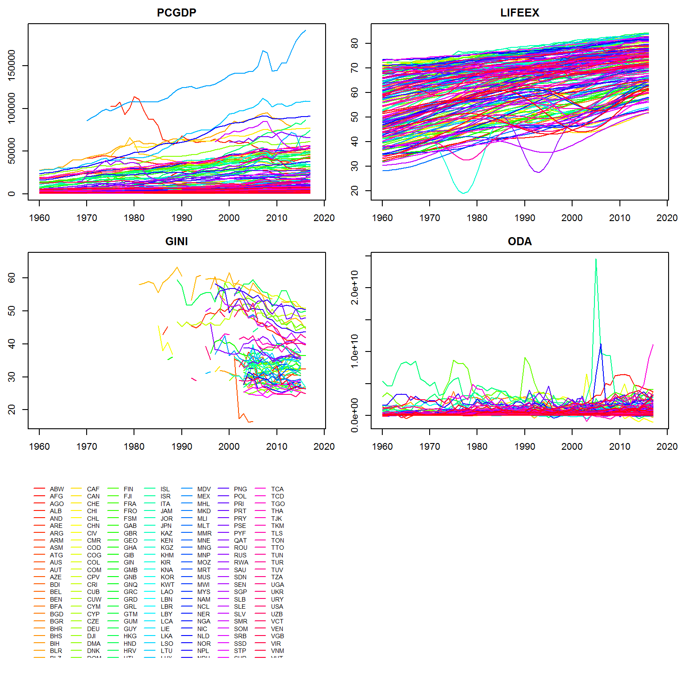
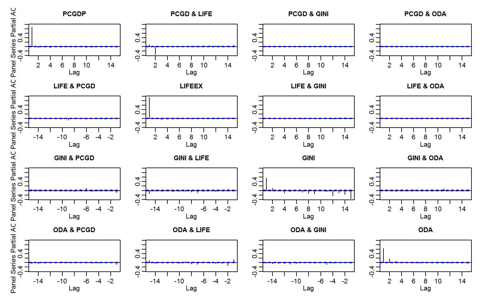
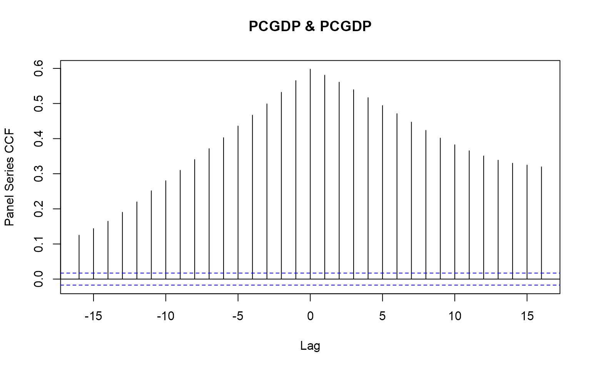

collapse and plm
Fast Transformation and Exploration of Panel Data
Sebastian Krantz
2021-06-27
Source:vignettes/collapse_and_plm.Rmd
collapse_and_plm.RmdThis vignette focuses on the integration of collapse and the popular plm (‘Linear Models for Panel Data’) package by Yves Croissant, Giovanni Millo and Kevin Tappe. It will demonstrate the utility of the pseries and pdata.frame classes introduced in plm together with the corresponding methods for fast collapse functions (implemented in C or C++), to extend and facilitate extremely fast computations on panel-vectors and panel data frames (20-100 times faster than native plm). The collapse package should enable R programmers to - with very little effort - write high-performance code in the domain of panel data exploration and panel data econometrics.
Notes:
To learn more about collapse, see the ‘Introduction to collapse’ vignette or the built-in structured documentation available under
help("collapse-documentation")after installing the package. In additionhelp("collapse-package")provides a compact set of examples for quick-start.Documentation and vignettes can also be viewed online.
The vignette is structured as follows:
Part 1 introduces collapse’s fast functions and associated transformation operators to compute various transformations on panel data, and delivers some benchmarks.
Part 2 uses these functions to explore panel data a bit and introduce additional functions for summary statistics, panel-autocorrelations and testing fixed effects.
Part 3 finally provides an example programming application by coding a slightly extended and very efficient Hausman and Taylor (1981) estimator.
For this vignette we will use a dataset (wlddev) supplied with collapse containing a panel of 5 key development indicators taken from the World Bank Development Indicators Database:
library(collapse) head(wlddev) # country iso3c date year decade region income OECD PCGDP LIFEEX GINI ODA # 1 Afghanistan AFG 1961-01-01 1960 1960 South Asia Low income FALSE NA 32.446 NA 116769997 # 2 Afghanistan AFG 1962-01-01 1961 1960 South Asia Low income FALSE NA 32.962 NA 232080002 # 3 Afghanistan AFG 1963-01-01 1962 1960 South Asia Low income FALSE NA 33.471 NA 112839996 # 4 Afghanistan AFG 1964-01-01 1963 1960 South Asia Low income FALSE NA 33.971 NA 237720001 # 5 Afghanistan AFG 1965-01-01 1964 1960 South Asia Low income FALSE NA 34.463 NA 295920013 # 6 Afghanistan AFG 1966-01-01 1965 1960 South Asia Low income FALSE NA 34.948 NA 341839996 # POP # 1 8996973 # 2 9169410 # 3 9351441 # 4 9543205 # 5 9744781 # 6 9956320 fnobs(wlddev) # This column-wise counts the number of observations # country iso3c date year decade region income OECD PCGDP LIFEEX GINI ODA # 13176 13176 13176 13176 13176 13176 13176 13176 9470 11670 1744 8608 # POP # 12919 fndistinct(wlddev) # This counts the number of distinct values # country iso3c date year decade region income OECD PCGDP LIFEEX GINI ODA # 216 216 61 61 7 7 4 2 9470 10548 368 7832 # POP # 12877
Part 1: Fast Transformation of Panel Data
First let us convert this data to a plm panel data.frame (class pdata.frame):
library(plm) # This creates a panel data frame pwlddev <- pdata.frame(wlddev, index = c("iso3c", "year")) str(pwlddev, give.attr = FALSE) # Classes 'pdata.frame' and 'data.frame': 13176 obs. of 13 variables: # $ country: 'pseries' Named chr "Aruba" "Aruba" "Aruba" "Aruba" ... # $ iso3c : Factor w/ 216 levels "ABW","AFG","AGO",..: 1 1 1 1 1 1 1 1 1 1 ... # $ date : pseries, format: "1961-01-01" "1962-01-01" "1963-01-01" ... # $ year : Factor w/ 61 levels "1960","1961",..: 1 2 3 4 5 6 7 8 9 10 ... # $ decade : 'pseries' Named int 1960 1960 1960 1960 1960 1960 1960 1960 1960 1960 ... # $ region : Factor w/ 7 levels "East Asia & Pacific",..: 3 3 3 3 3 3 3 3 3 3 ... # $ income : Factor w/ 4 levels "High income",..: 1 1 1 1 1 1 1 1 1 1 ... # $ OECD : 'pseries' Named logi FALSE FALSE FALSE FALSE FALSE FALSE ... # $ PCGDP : 'pseries' Named num NA NA NA NA NA NA NA NA NA NA ... # $ LIFEEX : 'pseries' Named num 65.7 66.1 66.4 66.8 67.1 ... # $ GINI : 'pseries' Named num NA NA NA NA NA NA NA NA NA NA ... # $ ODA : 'pseries' Named num NA NA NA NA NA NA NA NA NA NA ... # $ POP : 'pseries' Named num 54211 55438 56225 56695 57032 ... # A pdata.frame has an index attribute attached [retrieved using index(pwlddev) or attr(pwlddev, "index")] str(index(pwlddev)) # Classes 'pindex' and 'data.frame': 13176 obs. of 2 variables: # $ iso3c: Factor w/ 216 levels "ABW","AFG","AGO",..: 1 1 1 1 1 1 1 1 1 1 ... # $ year : Factor w/ 61 levels "1960","1961",..: 1 2 3 4 5 6 7 8 9 10 ... # This shows the individual and time dimensions pdim(pwlddev) # Balanced Panel: n = 216, T = 61, N = 13176
A plm::pdata.frame is a data.frame with panel identifiers attached as a list of factors in an index attribute (non-factor index variables are converted to factor). Each column in that data.frame is a Panel Series (plm::pseries), which also has the panel identifiers attached:
# Panel Series of GDP per Capita and Life-Expectancy at Birth PCGDP <- pwlddev$PCGDP LIFEEX <- pwlddev$LIFEEX str(LIFEEX) # 'pseries' Named num [1:13176] 65.7 66.1 66.4 66.8 67.1 ... # - attr(*, "names")= chr [1:13176] "ABW-1960" "ABW-1961" "ABW-1962" "ABW-1963" ... # - attr(*, "index")=Classes 'pindex' and 'data.frame': 13176 obs. of 2 variables: # ..$ iso3c: Factor w/ 216 levels "ABW","AFG","AGO",..: 1 1 1 1 1 1 1 1 1 1 ... # ..$ year : Factor w/ 61 levels "1960","1961",..: 1 2 3 4 5 6 7 8 9 10 ...
Now that we have explored the basic data structures provided in the plm package, let’s compute some transformations on them:
1.1 Between and Within Transformations
The functions fbetween and fbetween can be used to compute efficient between and within transformations on panel vectors and panel data.frames:
# Between-Transformations head(fbetween(LIFEEX)) # Between individual (default) # ABW-1960 ABW-1961 ABW-1962 ABW-1963 ABW-1964 ABW-1965 # 72.40653 72.40653 72.40653 72.40653 72.40653 72.40653 head(fbetween(LIFEEX, effect = "year")) # Between time # ABW-1960 ABW-1961 ABW-1962 ABW-1963 ABW-1964 ABW-1965 # 53.91206 54.47441 54.85718 55.20272 55.66802 56.12963 # Within-Transformations head(fwithin(LIFEEX)) # Within individuals (default) # ABW-1960 ABW-1961 ABW-1962 ABW-1963 ABW-1964 ABW-1965 # -6.744533 -6.332533 -5.962533 -5.619533 -5.293533 -4.971533 head(fwithin(LIFEEX, effect = "year")) # Within time # ABW-1960 ABW-1961 ABW-1962 ABW-1963 ABW-1964 ABW-1965 # 11.74994 11.59959 11.58682 11.58428 11.44498 11.30537
by default na.rm = TRUE thus both functions skip (preserve) missing values in the data (which is the default for all collapse functions). For fbetween the output behavior can be altered with the option fill: Setting fill = TRUE will compute the group-means on the complete cases in each group (as long as na.rm = TRUE), but replace all values in each group with the group mean (hence overwriting or ‘filling up’ missing values):
# This preserves missing values in the output head(fbetween(PCGDP), 30) # ABW-1960 ABW-1961 ABW-1962 ABW-1963 ABW-1964 ABW-1965 ABW-1966 ABW-1967 ABW-1968 ABW-1969 ABW-1970 # NA NA NA NA NA NA NA NA NA NA NA # ABW-1971 ABW-1972 ABW-1973 ABW-1974 ABW-1975 ABW-1976 ABW-1977 ABW-1978 ABW-1979 ABW-1980 ABW-1981 # NA NA NA NA NA NA NA NA NA NA NA # ABW-1982 ABW-1983 ABW-1984 ABW-1985 ABW-1986 ABW-1987 ABW-1988 ABW-1989 # NA NA NA NA 25413.84 25413.84 25413.84 25413.84 # This replaces all individuals with the group mean head(fbetween(PCGDP, fill = TRUE), 30) # ABW-1960 ABW-1961 ABW-1962 ABW-1963 ABW-1964 ABW-1965 ABW-1966 ABW-1967 ABW-1968 ABW-1969 ABW-1970 # 25413.84 25413.84 25413.84 25413.84 25413.84 25413.84 25413.84 25413.84 25413.84 25413.84 25413.84 # ABW-1971 ABW-1972 ABW-1973 ABW-1974 ABW-1975 ABW-1976 ABW-1977 ABW-1978 ABW-1979 ABW-1980 ABW-1981 # 25413.84 25413.84 25413.84 25413.84 25413.84 25413.84 25413.84 25413.84 25413.84 25413.84 25413.84 # ABW-1982 ABW-1983 ABW-1984 ABW-1985 ABW-1986 ABW-1987 ABW-1988 ABW-1989 # 25413.84 25413.84 25413.84 25413.84 25413.84 25413.84 25413.84 25413.84
In fwithin the mean argument allows to set an arbitrary data mean (different from 0) after the data is centered. In grouped centering task, as sensible choice for such an added mean would be the overall mean of the data series, enabled by the option mean = "overall.mean". This will add the overall mean of the series back to the data after subtracting out group means, and thus preserve the level of the data (and will only change the intercept when employed in a regression):
# This performed standard grouped centering head(fwithin(LIFEEX)) # ABW-1960 ABW-1961 ABW-1962 ABW-1963 ABW-1964 ABW-1965 # -6.744533 -6.332533 -5.962533 -5.619533 -5.293533 -4.971533 # This adds the overall average Life-Expectancy (across countries) to the country-demeaned series head(fwithin(LIFEEX, mean = "overall.mean")) # ABW-1960 ABW-1961 ABW-1962 ABW-1963 ABW-1964 ABW-1965 # 57.55177 57.96377 58.33377 58.67677 59.00277 59.32477
fbetween and fwithin can also be applied to pdata.frame’s where they will perform these computations variable by variable:
head(fbetween(num_vars(pwlddev)), 3) # decade PCGDP LIFEEX GINI ODA POP # ABW-1960 1985.574 NA 72.40653 NA NA 76268.63 # ABW-1961 1985.574 NA 72.40653 NA NA 76268.63 # ABW-1962 1985.574 NA 72.40653 NA NA 76268.63 head(fbetween(num_vars(pwlddev), fill = TRUE), 3) # decade PCGDP LIFEEX GINI ODA POP # ABW-1960 1985.574 25413.84 72.40653 NA 33245000 76268.63 # ABW-1961 1985.574 25413.84 72.40653 NA 33245000 76268.63 # ABW-1962 1985.574 25413.84 72.40653 NA 33245000 76268.63 head(fwithin(num_vars(pwlddev)), 3) # decade PCGDP LIFEEX GINI ODA POP # ABW-1960 -25.57377 NA -6.744533 NA NA -22057.63 # ABW-1961 -25.57377 NA -6.332533 NA NA -20830.63 # ABW-1962 -25.57377 NA -5.962533 NA NA -20043.63 head(fwithin(num_vars(pwlddev), mean = "overall.mean"), 3) # decade PCGDP LIFEEX GINI ODA POP # ABW-1960 1960 NA 57.55177 NA NA 24223914 # ABW-1961 1960 NA 57.96377 NA NA 24225141 # ABW-1962 1960 NA 58.33377 NA NA 24225928
Now next to fbetween and fwithin there also exist short versions B and W, which are referred to as transformation operators. These are essentially wrappers around fbetween and fwithin and provide the same functionality, but are more parsimonious to employ in regression formulas and also offer additional features when applied to panel data.frames. For panel series, B and W are exact analogues to fbetween and fwithin, just under a shorter name:
identical(fbetween(PCGDP), B(PCGDP)) # [1] TRUE identical(fbetween(PCGDP, fill = TRUE), B(PCGDP, fill = TRUE)) # [1] TRUE identical(fwithin(PCGDP), W(PCGDP)) # [1] TRUE identical(fwithin(PCGDP, mean = "overall.mean"), W(PCGDP, mean = "overall.mean")) # [1] TRUE
When applied to panel data.frames, B and W offer some additional utility by (a) allowing you to select columns to transform using the cols argument (default is cols = is.numeric, so by default all numeric columns will be selected for transformation), (b) allowing you to add a prefix to the transformed columns with the stub argument (default is stub = "B." for B and stub = "W." for W) and (c) preserving the panel-id’s with the keep.ids argument (default keep.ids = TRUE):
head(B(pwlddev), 3) # iso3c year B.decade B.PCGDP B.LIFEEX B.GINI B.ODA B.POP # ABW-1960 ABW 1960 1985.574 NA 72.40653 NA NA 76268.63 # ABW-1961 ABW 1961 1985.574 NA 72.40653 NA NA 76268.63 # ABW-1962 ABW 1962 1985.574 NA 72.40653 NA NA 76268.63 head(W(pwlddev, cols = 9:12), 3) # Here using the cols argument # iso3c year W.PCGDP W.LIFEEX W.GINI W.ODA # ABW-1960 ABW 1960 NA -6.744533 NA NA # ABW-1961 ABW 1961 NA -6.332533 NA NA # ABW-1962 ABW 1962 NA -5.962533 NA NA
fbetween / B and fwithin / W also support weighted computations. This of course applies more to panel-survey settings, but for the sake of illustration suppose we wanted to weight our between and within transformations by the population of these countries:
# This replaces values by the POP-weighted group mean and also preserves the weight variable (POP, argument keep.w = TRUE) head(B(pwlddev, w = ~ POP), 3) # iso3c year POP B.decade B.PCGDP B.LIFEEX B.GINI B.ODA # ABW-1960 ABW 1960 54211 1988.976 NA 72.96257 NA NA # ABW-1961 ABW 1961 55438 1988.976 NA 72.96257 NA NA # ABW-1962 ABW 1962 56225 1988.976 NA 72.96257 NA NA # This centers values on the POP-weighted group mean head(W(pwlddev, w = ~ POP, cols = c("PCGDP","LIFEEX","GINI")), 3) # iso3c year POP W.PCGDP W.LIFEEX W.GINI # ABW-1960 ABW 1960 54211 NA -7.300566 NA # ABW-1961 ABW 1961 55438 NA -6.888566 NA # ABW-1962 ABW 1962 56225 NA -6.518566 NA # This centers values on the POP-weighted group mean and also adds the overall POP-weighted mean of the data head(W(pwlddev, w = ~ POP, cols = c("PCGDP","LIFEEX","GINI"), mean = "overall.mean"), 3) # iso3c year POP W.PCGDP W.LIFEEX W.GINI # ABW-1960 ABW 1960 54211 NA 58.58012 NA # ABW-1961 ABW 1961 55438 NA 58.99212 NA # ABW-1962 ABW 1962 56225 NA 59.36212 NA
As shown above, with B and W the weight column can also be passed as a formula or character string, whereas fbetween and fwithin require the all inputs to be passed directly in terms of data (i.e. fbetween(get_vars(pwlddev, 9:11), w = pwlddev$POP)), and the weight vector or id columns are never preserved in the output. Therefore in most applications B and W are probably more convenient for quick use, whereas fbetween and fwithin are the preferred programmers choice, also because they have a little less R-overhead which makes them a tiny bit faster.
1.2 Higher-Dimensional Between and Within Transformations
Analogous to fbetween / B and fwithin / W, collapse provides a duo of functions and operators fhdbetween / HDB and fhdwithin / HDW to efficiently average and center data on multiple groups. The credit herefore goes to Laurent Berge, the author of the fixest package who wrote an efficient C-implementation of the alternating-projections algorithm to perform this task. fhdbetween / HDB and fhdwithin / HDW enrich this implementation (available in the function fixest::demean) by providing more options regarding missing values, and also allowing continuous covariates and (full) interactions to be projected out alongside factors. The methods for pseries and pdata.frame’s are however rather simple, as they simply simultaneously center panel-vectors on various panel-identifiers in the index (which can be more than 2, the default is to center on all identifiers):
# This simultaneously averages Life-Expectancy across countries and years head(HDB(LIFEEX)) # (same as running a regression on country and year dummies and taking the fitted values) # ABW-1960 ABW-1961 ABW-1962 ABW-1963 ABW-1964 ABW-1965 # 62.36179 62.85981 63.24258 63.65245 64.11774 64.52503 # This simultaneously centers Life-Expectenacy on countries and years head(HDW(LIFEEX)) # (same as running a regression on country and year dummies and taking the residuals) # ABW-1960 ABW-1961 ABW-1962 ABW-1963 ABW-1964 ABW-1965 # 3.300210 3.214193 3.201424 3.134554 2.995255 2.909975
The architecture of fhdbetween / HDB and fhdwithin / HDW differs a bit from fbetween / B and fwithin / W. This is essentially a consequence of the underlying C++-implementation (accessed through fixest::demean), which was not built to accommodate missing values. fhdbetween / HDB and fhdwithin / HDW therefore both have an argument fill = TRUE (the default), which stipulates that missing values in the data are preserved in the output. The collapse default na.rm = TRUE again ensures that only complete cases are used for the computation:
# Missing values are preserved in the output when fill = TRUE (the default) head(HDB(PCGDP), 30) # ABW-1960 ABW-1961 ABW-1962 ABW-1963 ABW-1964 ABW-1965 ABW-1966 ABW-1967 ABW-1968 ABW-1969 ABW-1970 # NA NA NA NA NA NA NA NA NA NA NA # ABW-1971 ABW-1972 ABW-1973 ABW-1974 ABW-1975 ABW-1976 ABW-1977 ABW-1978 ABW-1979 ABW-1980 ABW-1981 # NA NA NA NA NA NA NA NA NA NA NA # ABW-1982 ABW-1983 ABW-1984 ABW-1985 ABW-1986 ABW-1987 ABW-1988 ABW-1989 # NA NA NA NA 21833.32 22132.25 22479.20 22772.31 # When fill = FALSE, only the complete cases are returned nofill <- HDB(PCGDP, fill = FALSE) head(nofill, 30) # ABW-1986 ABW-1987 ABW-1988 ABW-1989 ABW-1990 ABW-1991 ABW-1992 ABW-1993 ABW-1994 ABW-1995 ABW-1996 # 21833.32 22132.25 22479.20 22772.31 23064.29 23060.00 23089.75 23115.36 23343.25 23595.16 23823.11 # ABW-1997 ABW-1998 ABW-1999 ABW-2000 ABW-2001 ABW-2002 ABW-2003 ABW-2004 ABW-2005 ABW-2006 ABW-2007 # 24149.44 24424.69 24727.46 25205.98 25399.16 25603.11 25851.29 26349.64 26665.54 27224.58 27772.82 # ABW-2008 ABW-2009 ABW-2010 ABW-2011 ABW-2012 ABW-2013 ABW-2014 ABW-2015 # 27769.52 27002.95 27218.84 27424.18 27471.49 27660.92 27889.34 28107.78 # This results in a shorter panel-vector length(nofill) # [1] 9470 length(PCGDP) # [1] 13176 # The cases that were missing and removed from the output are available as an attribute head(attr(nofill, "na.rm"), 30) # [1] 1 2 3 4 5 6 7 8 9 10 11 12 13 14 15 16 17 18 19 20 21 22 23 24 25 26 59 60 61 62
In the pdata.frame methods there are 3 different choices how to deal with missing values. The default for the plm classes in variable.wise = TRUE, which will essentially sequentially apply fhdbetween.pseries and fhdwithin.pseries (with the default fill = TRUE) to all columns. This is the same behavior as in fbetween / B and fwithin / W, which also consider the column-wise complete obs:
# This column-wise centers the data on countries and years tail(HDW(pwlddev), 10) # HDW.decade HDW.PCGDP HDW.LIFEEX HDW.GINI HDW.ODA HDW.POP # ZWE-2011 0 -4632.971 -8.080748 -3.663217 118306300 -4547122 # ZWE-2012 0 -4523.505 -6.271385 NA 385526419 -4749368 # ZWE-2013 0 -4710.576 -4.753056 NA 149910333 -4903132 # ZWE-2014 0 -4931.693 -3.568136 NA 93295114 -5059317 # ZWE-2015 0 -5148.895 -2.685053 NA 150833589 -5224484 # ZWE-2016 0 -5433.809 -2.203219 NA -27844184 -5404667 # ZWE-2017 0 -5645.022 -1.920365 -1.964138 10266318 -5591762 # ZWE-2018 0 -5938.794 -1.759333 NA 59646823 -5774326 # ZWE-2019 0 -5710.646 -1.669415 5.627356 223473855 -5946725 # ZWE-2020 0 NA NA NA NA NA
If variable.wise = FALSE, fhdbetween / HDB and fhdwithin / HDW will only consider the complete cases in the dataset, but still return a dataset of the same dimensions (as long as fill = TRUE), resulting in some rows all-missing:
# This centers the complete cases of the data data on countries and years and keeps missing cases tail(HDW(pwlddev, variable.wise = FALSE), 10) # HDW.decade HDW.PCGDP HDW.LIFEEX HDW.GINI HDW.ODA HDW.POP # ZWE-2011 0 517.6924 -4.379840 -3.839653 -176176494 -3042247 # ZWE-2012 NA NA NA NA NA NA # ZWE-2013 NA NA NA NA NA NA # ZWE-2014 NA NA NA NA NA NA # ZWE-2015 NA NA NA NA NA NA # ZWE-2016 NA NA NA NA NA NA # ZWE-2017 0 -128.5240 1.971143 -1.314869 -67497466 1936716 # ZWE-2018 NA NA NA NA NA NA # ZWE-2019 0 -389.1684 2.408697 5.154522 243673961 1105530 # ZWE-2020 NA NA NA NA NA NA
Finally, if also fill = FALSE, the behavior is the same as in the pseries method: Missing cases are removed from the data:
# This centers the complete cases of the data data on countries and years, and removes missing cases res <- HDW(pwlddev, fill = FALSE) tail(res, 10) # HDW.decade HDW.PCGDP HDW.LIFEEX HDW.GINI HDW.ODA HDW.POP # ZMB-1996 0 534.39373 -3.6445256 -4.744748 -174237036 4911230.7 # ZMB-1998 0 201.58094 -4.1708951 -5.085621 -492258601 644947.7 # ZMB-2002 0 250.78234 -2.9085522 -10.912265 81848768 -1027712.3 # ZMB-2004 0 -72.94954 -1.9629513 1.494340 396830282 -3774596.6 # ZMB-2006 0 -308.55937 -0.4975872 2.407226 485998870 -2255101.6 # ZMB-2010 0 -428.16949 3.9600416 4.497547 -148714637 -4174306.2 # ZMB-2015 0 -1106.52213 8.4099983 7.553052 -335529320 -4962997.8 # ZWE-2011 0 517.69244 -4.3798401 -3.839653 -176176494 -3042246.9 # ZWE-2017 0 -128.52402 1.9711431 -1.314869 -67497466 1936716.5 # ZWE-2019 0 -389.16842 2.4086971 5.154522 243673961 1105530.5 tail(attr(res, "na.rm")) # [1] 13169 13170 13171 13172 13174 13176
Notes: (1) Because of the different missing case options and associated challenges, panel-identifiers are not preserved in HDB and HDW. (2) The default variable.wise = TRUE and fill = TRUE was only set for the pseries and pdata.frame methods, to harmonize the default implementations with fbetween / B and fwithin / W for these classes. In the standard default, matrix and data.frame methods, the defaults are variable.wise = FALSE and fill = FALSE (i.e. missing cases are removed beforehand), which is generally more efficient.
1.3 Scaling and Centering
Next to the above functions for grouped centering and averaging, the function / operator pair fscale / STD can be used to efficiently standardize (i.e. scale and center) panel data along an arbitrary dimension. The architecture is identical to that of fwithin / W or fbetween / B.
# This standardizes GDP per capita in each country STD_PCGDP <- STD(PCGDP) # Checks: head(fmean(STD_PCGDP, index(STD_PCGDP, 1))) # ABW AFG AGO ALB AND ARE # -1.443290e-15 2.220446e-16 -6.661338e-16 -3.858025e-16 -8.881784e-16 2.615192e-16 head(fsd(STD_PCGDP, index(STD_PCGDP, 1))) # ABW AFG AGO ALB AND ARE # 1 1 1 1 1 1 # This standardizes GDP per capita in each year STD_PCGDP_T <- STD(PCGDP, effect = "year") # Checks: head(fmean(STD_PCGDP_T, index(STD_PCGDP_T, 2))) # 1960 1961 1962 1963 1964 1965 # 9.638200e-17 1.321343e-16 3.912355e-18 -2.218785e-16 -2.942571e-16 2.795383e-16 head(fsd(STD_PCGDP_T, index(STD_PCGDP_T, 2))) # 1960 1961 1962 1963 1964 1965 # 1 1 1 1 1 1
And similarly for pdata.frame’s:
head(STD(pwlddev, cols = 9:12)) # iso3c year STD.PCGDP STD.LIFEEX STD.GINI STD.ODA # ABW-1960 ABW 1960 NA -2.372636 NA NA # ABW-1961 ABW 1961 NA -2.227700 NA NA # ABW-1962 ABW 1962 NA -2.097539 NA NA # ABW-1963 ABW 1963 NA -1.976876 NA NA # ABW-1964 ABW 1964 NA -1.862193 NA NA # ABW-1965 ABW 1965 NA -1.748918 NA NA head(STD(pwlddev, cols = 9:12, effect = "year")) # iso3c year STD.PCGDP STD.LIFEEX STD.GINI STD.ODA # ABW-1960 ABW 1960 NA 0.9609854 NA NA # ABW-1961 ABW 1961 NA 0.9485730 NA NA # ABW-1962 ABW 1962 NA 0.9585105 NA NA # ABW-1963 ABW 1963 NA 0.9669638 NA NA # ABW-1964 ABW 1964 NA 0.9579477 NA NA # ABW-1965 ABW 1965 NA 0.9556529 NA NA
More customized scaling can be done with the help of the mean and sd arguments to fscale / STD. By default mean = 0 and sd = 1, but these could be assigned any numeric values:
# This will scale the data such that mean mean within each country is 5 and the standard deviation is 3 qsu(fscale(pwlddev$PCGDP, mean = 5, sd = 3)) # N/T Mean SD Min Max # Overall 9466 5 2.968 -6.1908 16.257 # Between 202 5 0 5 5 # Within 46.8614 5 2.968 -6.1908 16.257
Even further customization (i.e. setting means and standard deviations for each group and / or each column) can of course be achieved by calling collapse::TRA on the result of fscale to sweep out an appropriate set of means and standard deviations.
Scaling without centering can be done with the option mean = FALSE. This will also preserve the mean of the data overall and within each group:
# Scaling without centering: Mean preserving with fscale / STD qsu(fscale(pwlddev$PCGDP, mean = FALSE, sd = 3)) # N/T Mean SD Min Max # Overall 9466 12031.4627 17803.3537 247.7598 131349.27 # Between 202 12169.2793 18055.6626 253.1886 131342.669 # Within 46.8614 12031.4627 2.968 12020.2718 12042.7196 # Scaling without centering can also be done using fsd, but this does not preserve the mean qsu(fsd(pwlddev$PCGDP, index(pwlddev, 1), TRA = "/")) # N/T Mean SD Min Max # Overall 9466 4.247 3.192 0.0579 26.647 # Between 202 4.6036 3.5846 0.8207 24.8111 # Within 46.8614 4.247 0.9893 0.5167 7.9993
Finally a special kind of data harmonization in the first two moments can be done by setting mean = "overall.mean" and sd = "within.sd" in a grouped scaling task. This will harmonize the data across groups such that the mean of each group is equal to the overall data mean and the standard deviation equal to the within standard deviation (= the standard deviation calculated on the group-centered series):
fmean(pwlddev$PCGDP) # Overall mean # [1] 12048.78 fsd(W(pwlddev$PCGDP)) # Within sd # [1] 6723.681 # Scaling and centerin such that the mean of each country is the overall mean, and the sd of each country is the within sd qsu(fscale(pwlddev$PCGDP, mean = "overall.mean", sd = "within.sd")) # N/T Mean SD Min Max # Overall 9466 12048.778 6651.9052 -13032.4333 37278.2175 # Between 202 12048.778 0 12048.778 12048.778 # Within 46.8614 12048.778 6651.9052 -13032.4333 37278.2175
All of this seamlessly generalizes to weighted scaling an centering, using the w argument to add a weight vector.
1.4 Panel Lags / Leads, Differences and Growth Rates
With flag / L / F, fdiff / D and fgrowth / G, collapse provides a fast and comprehensive C++ based solution to the computation of (sequences of) lags / leads and (sequences of) lagged / leaded and suitably iterated (quasi-, log-) differences and growth rates on panel data. The pseries and pdata.frame methods to these functions and associated transformation operators use the panel-identifiers in the ‘index’ attached to these objects (where the last variable in the ‘index’ is taken as the time-variable and the variables before that are taken as individual identifiers) to perform fast fully-identified time-dependent operations on panel data, without the need of sorting the data.
With flag / L / F, it is easy to lag or lead pseries:
# A panel-lag head(flag(LIFEEX)) # ABW-1960 ABW-1961 ABW-1962 ABW-1963 ABW-1964 ABW-1965 # NA 65.662 66.074 66.444 66.787 67.113 # A panel-lead head(flag(LIFEEX, -1)) # ABW-1960 ABW-1961 ABW-1962 ABW-1963 ABW-1964 ABW-1965 # 66.074 66.444 66.787 67.113 67.435 67.762 # The lag and lead operators are even more parsimonious to employ: all_identical(L(LIFEEX), flag(LIFEEX), lag(LIFEEX)) # [1] TRUE all_identical(F(LIFEEX), flag(LIFEEX, -1), lead(LIFEEX)) # [1] TRUE
It is also possible to compute a sequence of lags / leads using flag or one of the operators:
# sequence of panel- lags and leads head(flag(LIFEEX, -1:3)) # F1 -- L1 L2 L3 # ABW-1960 66.074 65.662 NA NA NA # ABW-1961 66.444 66.074 65.662 NA NA # ABW-1962 66.787 66.444 66.074 65.662 NA # ABW-1963 67.113 66.787 66.444 66.074 65.662 # ABW-1964 67.435 67.113 66.787 66.444 66.074 # ABW-1965 67.762 67.435 67.113 66.787 66.444 all_identical(L(LIFEEX, -1:3), F(LIFEEX, 1:-3), flag(LIFEEX, -1:3)) # [1] TRUE # The native plm implementation also returns a matrix of lags but with different column names head(lag(LIFEEX, -1:3), 4) # -1 0 1 2 3 # ABW-1960 66.074 65.662 NA NA NA # ABW-1961 66.444 66.074 65.662 NA NA # ABW-1962 66.787 66.444 66.074 65.662 NA # ABW-1963 67.113 66.787 66.444 66.074 65.662
Of course the lag orders may be unevenly spaced, i.e. L(x, -1:3*12) would compute seasonal lags on monthly data. On pdata.frame’s, the effects of flag and L / F differ insofar that flag will just lag the entire dataset without preserving identifiers (although the index attribute is always preserved), whereas L / F by default (cols = is.numeric) select the numeric variables and add the panel-id’s on the left (default keep.ids = TRUE):
# This lags the entire data head(flag(pwlddev)) # country iso3c date year decade region income OECD PCGDP # ABW-1960 <NA> <NA> <NA> <NA> NA <NA> <NA> NA NA # ABW-1961 Aruba ABW 1961-01-01 1960 1960 Latin America & Caribbean High income FALSE NA # ABW-1962 Aruba ABW 1962-01-01 1961 1960 Latin America & Caribbean High income FALSE NA # ABW-1963 Aruba ABW 1963-01-01 1962 1960 Latin America & Caribbean High income FALSE NA # ABW-1964 Aruba ABW 1964-01-01 1963 1960 Latin America & Caribbean High income FALSE NA # ABW-1965 Aruba ABW 1965-01-01 1964 1960 Latin America & Caribbean High income FALSE NA # LIFEEX GINI ODA POP # ABW-1960 NA NA NA NA # ABW-1961 65.662 NA NA 54211 # ABW-1962 66.074 NA NA 55438 # ABW-1963 66.444 NA NA 56225 # ABW-1964 66.787 NA NA 56695 # ABW-1965 67.113 NA NA 57032 # This lags only numeric columns and preserves panel-id's head(L(pwlddev)) # iso3c year L1.decade L1.PCGDP L1.LIFEEX L1.GINI L1.ODA L1.POP # ABW-1960 ABW 1960 NA NA NA NA NA NA # ABW-1961 ABW 1961 1960 NA 65.662 NA NA 54211 # ABW-1962 ABW 1962 1960 NA 66.074 NA NA 55438 # ABW-1963 ABW 1963 1960 NA 66.444 NA NA 56225 # ABW-1964 ABW 1964 1960 NA 66.787 NA NA 56695 # ABW-1965 ABW 1965 1960 NA 67.113 NA NA 57032 # This lags only columns 9 through 12 and preserves panel-id's head(L(pwlddev, cols = 9:12)) # iso3c year L1.PCGDP L1.LIFEEX L1.GINI L1.ODA # ABW-1960 ABW 1960 NA NA NA NA # ABW-1961 ABW 1961 NA 65.662 NA NA # ABW-1962 ABW 1962 NA 66.074 NA NA # ABW-1963 ABW 1963 NA 66.444 NA NA # ABW-1964 ABW 1964 NA 66.787 NA NA # ABW-1965 ABW 1965 NA 67.113 NA NA
We can also easily compute a sequence of lags / leads on a panel data.frame:
# This lags only columns 9 through 12 and preserves panel-id's head(L(pwlddev, -1:3, cols = 9:12)) # iso3c year F1.PCGDP PCGDP L1.PCGDP L2.PCGDP L3.PCGDP F1.LIFEEX LIFEEX L1.LIFEEX L2.LIFEEX # ABW-1960 ABW 1960 NA NA NA NA NA 66.074 65.662 NA NA # ABW-1961 ABW 1961 NA NA NA NA NA 66.444 66.074 65.662 NA # ABW-1962 ABW 1962 NA NA NA NA NA 66.787 66.444 66.074 65.662 # ABW-1963 ABW 1963 NA NA NA NA NA 67.113 66.787 66.444 66.074 # ABW-1964 ABW 1964 NA NA NA NA NA 67.435 67.113 66.787 66.444 # ABW-1965 ABW 1965 NA NA NA NA NA 67.762 67.435 67.113 66.787 # L3.LIFEEX F1.GINI GINI L1.GINI L2.GINI L3.GINI F1.ODA ODA L1.ODA L2.ODA L3.ODA # ABW-1960 NA NA NA NA NA NA NA NA NA NA NA # ABW-1961 NA NA NA NA NA NA NA NA NA NA NA # ABW-1962 NA NA NA NA NA NA NA NA NA NA NA # ABW-1963 65.662 NA NA NA NA NA NA NA NA NA NA # ABW-1964 66.074 NA NA NA NA NA NA NA NA NA NA # ABW-1965 66.444 NA NA NA NA NA NA NA NA NA NA
Essentially the same functionality applies to fdiff / D and fgrowth / G, with the main differences that these functions also have a diff argument to determine the number of iterations:
# Panel-difference of Life Expectancy head(fdiff(LIFEEX)) # ABW-1960 ABW-1961 ABW-1962 ABW-1963 ABW-1964 ABW-1965 # NA 0.412 0.370 0.343 0.326 0.322 # Second panel-difference head(fdiff(LIFEEX, diff = 2)) # ABW-1960 ABW-1961 ABW-1962 ABW-1963 ABW-1964 ABW-1965 # NA NA -0.042 -0.027 -0.017 -0.004 # Panel-growth rate of Life Expectancy head(fgrowth(LIFEEX)) # ABW-1960 ABW-1961 ABW-1962 ABW-1963 ABW-1964 ABW-1965 # NA 0.6274558 0.5599782 0.5162242 0.4881189 0.4797878 # Growth rate of growth rate of Life Expectancy head(fgrowth(LIFEEX, diff = 2)) # ABW-1960 ABW-1961 ABW-1962 ABW-1963 ABW-1964 ABW-1965 # NA NA -10.754153 -7.813521 -5.444387 -1.706782 identical(D(LIFEEX), fdiff(LIFEEX)) # [1] TRUE identical(G(LIFEEX), fgrowth(LIFEEX)) # [1] TRUE identical(fdiff(LIFEEX), diff(LIFEEX)) # Same as plm::diff.pseries (which does not compute iterated panel-differences) # [1] TRUE
By default, growth rates are calculated in percentage terms which is set by the default argument scale = 100. It is also possible to compute log-differences with fdiff(.., log = TRUE) or the Dlog operator, and growth rates in percentage terms based on log-differences using fgrowth(.., logdiff = TRUE).
# Panel log-difference of Life Expectancy head(Dlog(LIFEEX)) # ABW-1960 ABW-1961 ABW-1962 ABW-1963 ABW-1964 ABW-1965 # NA 0.006254955 0.005584162 0.005148963 0.004869315 0.004786405 # Panel log-difference growth rate (in percentage terms) of Life Expectancy head(G(LIFEEX, logdiff = TRUE)) # ABW-1960 ABW-1961 ABW-1962 ABW-1963 ABW-1964 ABW-1965 # NA 0.6254955 0.5584162 0.5148963 0.4869315 0.4786405
It is also possible to compute sequences of lagged / leaded and iterated differences, log-differences and growth rates:
# first and second forward-difference and first and second difference of lags 1-3 of Life-Expectancy head(D(LIFEEX, -1:3, 1:2)) # FD1 FD2 -- D1 D2 L2D1 L2D2 L3D1 L3D2 # ABW-1960 -0.412 -0.042 65.662 NA NA NA NA NA NA # ABW-1961 -0.370 -0.027 66.074 0.412 NA NA NA NA NA # ABW-1962 -0.343 -0.017 66.444 0.370 -0.042 0.782 NA NA NA # ABW-1963 -0.326 -0.004 66.787 0.343 -0.027 0.713 NA 1.125 NA # ABW-1964 -0.322 0.005 67.113 0.326 -0.017 0.669 -0.113 1.039 NA # ABW-1965 -0.327 0.006 67.435 0.322 -0.004 0.648 -0.065 0.991 NA # Same with Log-differences head(Dlog(LIFEEX, -1:3, 1:2)) # FDlog1 FDlog2 -- Dlog1 Dlog2 L2Dlog1 L2Dlog2 # ABW-1960 -0.006254955 -6.707929e-04 4.184520 NA NA NA NA # ABW-1961 -0.005584162 -4.351984e-04 4.190775 0.006254955 NA NA NA # ABW-1962 -0.005148963 -2.796481e-04 4.196359 0.005584162 -0.0006707929 0.01183912 NA # ABW-1963 -0.004869315 -8.291000e-05 4.201508 0.005148963 -0.0004351984 0.01073312 NA # ABW-1964 -0.004786405 5.098981e-05 4.206378 0.004869315 -0.0002796481 0.01001828 -0.001820838 # ABW-1965 -0.004837395 6.482830e-05 4.211164 0.004786405 -0.0000829100 0.00965572 -0.001077405 # L3Dlog1 L3Dlog2 # ABW-1960 NA NA # ABW-1961 NA NA # ABW-1962 NA NA # ABW-1963 0.01698808 NA # ABW-1964 0.01560244 NA # ABW-1965 0.01480468 NA # Same with (exact) growth rates head(G(LIFEEX, -1:3, 1:2)) # FG1 FG2 -- G1 G2 L2G1 L2G2 L3G1 L3G2 # ABW-1960 -0.6235433 11.974895 65.662 NA NA NA NA NA NA # ABW-1961 -0.5568599 8.428580 66.074 0.6274558 NA NA NA NA NA # ABW-1962 -0.5135730 5.728297 66.444 0.5599782 -10.754153 1.1909476 NA NA NA # ABW-1963 -0.4857479 1.727984 66.787 0.5162242 -7.813521 1.0790931 NA 1.713320 NA # ABW-1964 -0.4774968 -1.051555 67.113 0.4881189 -5.444387 1.0068629 -15.45699 1.572479 NA # ABW-1965 -0.4825714 -1.319230 67.435 0.4797878 -1.706782 0.9702487 -10.08666 1.491482 NA
A further possibility is to compute quasi-differences and quasi-log-differences of the form \(x_t - \rho x_{t-s}\) or \(log(x_t) - \rho log(x_{t-s})\). These are useful for panel-regressions suffering from serial-correlation, following Cochrane & Orcutt (1949), and can be specified with the rho argument to fdiff, D and Dlog.
# Regression of GDP on Life Expectance with country and time FE mod <- lm(PCGDP ~ LIFEEX, data = fhdwithin(fselect(pwlddev, PCGDP, LIFEEX), fill = FALSE)) mod # # Call: # lm(formula = PCGDP ~ LIFEEX, data = fhdwithin(fselect(pwlddev, # PCGDP, LIFEEX), fill = FALSE)) # # Coefficients: # (Intercept) LIFEEX # -2.462e-12 -3.330e+02 # Computing autocorrelation of residuals r <- residuals(mod) r <- pwcor(r, L(r, 1, substr(names(r), 1, 3))) # Need this to compute a panel-lag r # [1] .98 # Running the regression again quasi-differencing the transformed data modCO <- lm(PCGDP ~ LIFEEX, data = fdiff(fhdwithin(fselect(pwlddev, PCGDP, LIFEEX), variable.wise = FALSE), rho = r, stubs = FALSE)) modCO # # Call: # lm(formula = PCGDP ~ LIFEEX, data = fdiff(fhdwithin(fselect(pwlddev, # PCGDP, LIFEEX), variable.wise = FALSE), rho = r, stubs = FALSE)) # # Coefficients: # (Intercept) LIFEEX # -12.93 -91.97 # In this case rho is almost 1, so we might as well just difference the untransformed data and go with that # We also need to bootstrap this for proper standard errors.
A final important advantage of the collapse functions is that the panel-identifiers are preserved, even if a matrix of lags / leads / differences or growth rates is returned. This allows for nested panel-computations, for example we can compute shifted sequences of lagged / leaded and iterated panel differences:
# Sequence of differneces (same as above), adding one extra lag of the whole sequence head(L(D(LIFEEX, -1:3, 1:2), 0:1)) # FD1 L1.FD1 FD2 L1.FD2 -- L1.-- D1 L1.D1 D2 L1.D2 L2D1 L1.L2D1 L2D2 # ABW-1960 -0.412 NA -0.042 NA 65.662 NA NA NA NA NA NA NA NA # ABW-1961 -0.370 -0.412 -0.027 -0.042 66.074 65.662 0.412 NA NA NA NA NA NA # ABW-1962 -0.343 -0.370 -0.017 -0.027 66.444 66.074 0.370 0.412 -0.042 NA 0.782 NA NA # ABW-1963 -0.326 -0.343 -0.004 -0.017 66.787 66.444 0.343 0.370 -0.027 -0.042 0.713 0.782 NA # ABW-1964 -0.322 -0.326 0.005 -0.004 67.113 66.787 0.326 0.343 -0.017 -0.027 0.669 0.713 -0.113 # ABW-1965 -0.327 -0.322 0.006 0.005 67.435 67.113 0.322 0.326 -0.004 -0.017 0.648 0.669 -0.065 # L1.L2D2 L3D1 L1.L3D1 L3D2 L1.L3D2 # ABW-1960 NA NA NA NA NA # ABW-1961 NA NA NA NA NA # ABW-1962 NA NA NA NA NA # ABW-1963 NA 1.125 NA NA NA # ABW-1964 NA 1.039 1.125 NA NA # ABW-1965 -0.113 0.991 1.039 NA NA
All of this naturally generalized to computations on pdata.frames:
head(D(pwlddev, -1:3, 1:2, cols = 9:10), 3) # iso3c year FD1.PCGDP FD2.PCGDP PCGDP D1.PCGDP D2.PCGDP L2D1.PCGDP L2D2.PCGDP L3D1.PCGDP # ABW-1960 ABW 1960 NA NA NA NA NA NA NA NA # ABW-1961 ABW 1961 NA NA NA NA NA NA NA NA # ABW-1962 ABW 1962 NA NA NA NA NA NA NA NA # L3D2.PCGDP FD1.LIFEEX FD2.LIFEEX LIFEEX D1.LIFEEX D2.LIFEEX L2D1.LIFEEX L2D2.LIFEEX # ABW-1960 NA -0.412 -0.042 65.662 NA NA NA NA # ABW-1961 NA -0.370 -0.027 66.074 0.412 NA NA NA # ABW-1962 NA -0.343 -0.017 66.444 0.370 -0.042 0.782 NA # L3D1.LIFEEX L3D2.LIFEEX # ABW-1960 NA NA # ABW-1961 NA NA # ABW-1962 NA NA head(L(D(pwlddev, -1:3, 1:2, cols = 9:10), 0:1), 3) # iso3c year FD1.PCGDP L1.FD1.PCGDP FD2.PCGDP L1.FD2.PCGDP PCGDP L1.PCGDP D1.PCGDP # ABW-1960 ABW 1960 NA NA NA NA NA NA NA # ABW-1961 ABW 1961 NA NA NA NA NA NA NA # ABW-1962 ABW 1962 NA NA NA NA NA NA NA # L1.D1.PCGDP D2.PCGDP L1.D2.PCGDP L2D1.PCGDP L1.L2D1.PCGDP L2D2.PCGDP L1.L2D2.PCGDP # ABW-1960 NA NA NA NA NA NA NA # ABW-1961 NA NA NA NA NA NA NA # ABW-1962 NA NA NA NA NA NA NA # L3D1.PCGDP L1.L3D1.PCGDP L3D2.PCGDP L1.L3D2.PCGDP FD1.LIFEEX L1.FD1.LIFEEX FD2.LIFEEX # ABW-1960 NA NA NA NA -0.412 NA -0.042 # ABW-1961 NA NA NA NA -0.370 -0.412 -0.027 # ABW-1962 NA NA NA NA -0.343 -0.370 -0.017 # L1.FD2.LIFEEX LIFEEX L1.LIFEEX D1.LIFEEX L1.D1.LIFEEX D2.LIFEEX L1.D2.LIFEEX L2D1.LIFEEX # ABW-1960 NA 65.662 NA NA NA NA NA NA # ABW-1961 -0.042 66.074 65.662 0.412 NA NA NA NA # ABW-1962 -0.027 66.444 66.074 0.370 0.412 -0.042 NA 0.782 # L1.L2D1.LIFEEX L2D2.LIFEEX L1.L2D2.LIFEEX L3D1.LIFEEX L1.L3D1.LIFEEX L3D2.LIFEEX # ABW-1960 NA NA NA NA NA NA # ABW-1961 NA NA NA NA NA NA # ABW-1962 NA NA NA NA NA NA # L1.L3D2.LIFEEX # ABW-1960 NA # ABW-1961 NA # ABW-1962 NA
1.5 Panel Data to Array Conversions
Viewing and transforming panel data stored in an array can be a powerful strategy, especially as it provides much more direct access to the different dimensions of the data. The function psmat can be used to efficiently transform pseries to a 2D matrix, and pdata.frame’s to a 3D array:
# Converting the panel series to array, individual rows (default) str(psmat(LIFEEX)) # 'psmat' num [1:216, 1:61] 65.7 32.4 37.5 62.3 NA ... # - attr(*, "dimnames")=List of 2 # ..$ : chr [1:216] "ABW" "AFG" "AGO" "ALB" ... # ..$ : chr [1:61] "1960" "1961" "1962" "1963" ... # - attr(*, "transpose")= logi FALSE # Converting the panel series to array, individual columns str(psmat(LIFEEX, transpose = TRUE)) # 'psmat' num [1:61, 1:216] 65.7 66.1 66.4 66.8 67.1 ... # - attr(*, "dimnames")=List of 2 # ..$ : chr [1:61] "1960" "1961" "1962" "1963" ... # ..$ : chr [1:216] "ABW" "AFG" "AGO" "ALB" ... # - attr(*, "transpose")= logi TRUE # Same as plm::as.matrix.pseries, apart from attributes identical(unattrib(psmat(LIFEEX)), unattrib(as.matrix(LIFEEX))) # [1] TRUE identical(unattrib(psmat(LIFEEX, transpose = TRUE)), unattrib(as.matrix(LIFEEX, idbyrow = FALSE))) # [1] TRUE
Applying psmat to a pdata.frame yields a 3D array:
psar <- psmat(pwlddev, cols = 9:12) str(psar) # 'psmat' num [1:216, 1:61, 1:4] NA NA NA NA NA ... # - attr(*, "dimnames")=List of 3 # ..$ : chr [1:216] "ABW" "AFG" "AGO" "ALB" ... # ..$ : chr [1:61] "1960" "1961" "1962" "1963" ... # ..$ : chr [1:4] "PCGDP" "LIFEEX" "GINI" "ODA" # - attr(*, "transpose")= logi FALSE str(psmat(pwlddev, cols = 9:12, transpose = TRUE)) # 'psmat' num [1:61, 1:216, 1:4] NA NA NA NA NA NA NA NA NA NA ... # - attr(*, "dimnames")=List of 3 # ..$ : chr [1:61] "1960" "1961" "1962" "1963" ... # ..$ : chr [1:216] "ABW" "AFG" "AGO" "ALB" ... # ..$ : chr [1:4] "PCGDP" "LIFEEX" "GINI" "ODA" # - attr(*, "transpose")= logi TRUE
This format can be very convenient to quickly and freely access data for different countries, variables and time-periods:
# Looking at wealth, health and inequality in Brazil and Argentinia, 1990-1999 aperm(psar[c("BRA","ARG"), as.character(1990:1999), c("PCGDP", "LIFEEX", "GINI")]) # , , BRA # # 1990 1991 1992 1993 1994 1995 1996 1997 1998 1999 # PCGDP 7983.7 7963.1 7791.8 8020.6 8311.6 8540.1 8591.0 8744.8 8641.3 8554.1 # LIFEEX 66.3 66.7 67.1 67.5 67.9 68.3 68.7 69.1 69.4 69.8 # GINI 60.5 NA 53.2 60.1 NA 59.6 59.9 59.8 59.6 59.0 # # , , ARG # # 1990 1991 1992 1993 1994 1995 1996 1997 1998 1999 # PCGDP 6245.7 6721.3 7157.3 7644.2 7988.6 7666.5 7994.2 8543.0 8772.1 8381.3 # LIFEEX 71.6 71.8 72.0 72.2 72.5 72.7 72.8 73.0 73.2 73.4 # GINI NA 46.8 45.5 44.9 45.9 48.9 49.5 49.1 50.7 49.8
psmat can also return the output as a list of panel series matrices:
pslist <- psmat(pwlddev, cols = 9:12, array = FALSE) str(pslist) # List of 4 # $ PCGDP : 'psmat' num [1:216, 1:61] NA NA NA NA NA ... # ..- attr(*, "dimnames")=List of 2 # .. ..$ : chr [1:216] "ABW" "AFG" "AGO" "ALB" ... # .. ..$ : chr [1:61] "1960" "1961" "1962" "1963" ... # ..- attr(*, "transpose")= logi FALSE # $ LIFEEX: 'psmat' num [1:216, 1:61] 65.7 32.4 37.5 62.3 NA ... # ..- attr(*, "dimnames")=List of 2 # .. ..$ : chr [1:216] "ABW" "AFG" "AGO" "ALB" ... # .. ..$ : chr [1:61] "1960" "1961" "1962" "1963" ... # ..- attr(*, "transpose")= logi FALSE # $ GINI : 'psmat' num [1:216, 1:61] NA NA NA NA NA NA NA NA NA NA ... # ..- attr(*, "dimnames")=List of 2 # .. ..$ : chr [1:216] "ABW" "AFG" "AGO" "ALB" ... # .. ..$ : chr [1:61] "1960" "1961" "1962" "1963" ... # ..- attr(*, "transpose")= logi FALSE # $ ODA : 'psmat' num [1:216, 1:61] NA 116769997 -390000 NA NA ... # ..- attr(*, "dimnames")=List of 2 # .. ..$ : chr [1:216] "ABW" "AFG" "AGO" "ALB" ... # .. ..$ : chr [1:61] "1960" "1961" "1962" "1963" ... # ..- attr(*, "transpose")= logi FALSE
This list can then be unlisted using the function unlist2d (for unlisting in 2-dimensions), to yield a reshaped data.frame:
head(unlist2d(pslist, idcols = "Variable", row.names = "Country Code"), 3) # Variable Country Code 1960 1961 1962 1963 1964 1965 1966 1967 1968 1969 1970 1971 1972 1973 1974 # 1 PCGDP ABW NA NA NA NA NA NA NA NA NA NA NA NA NA NA NA # 2 PCGDP AFG NA NA NA NA NA NA NA NA NA NA NA NA NA NA NA # 3 PCGDP AGO NA NA NA NA NA NA NA NA NA NA NA NA NA NA NA # 1975 1976 1977 1978 1979 1980 1981 1982 1983 1984 1985 1986 # 1 NA NA NA NA NA NA NA NA NA NA NA 15669.616 # 2 NA NA NA NA NA NA NA NA NA NA NA NA # 3 NA NA NA NA NA 3193.404 2947.194 2844.322 2859.919 2925.367 2922.217 2902.618 # 1987 1988 1989 1990 1991 1992 1993 1994 1995 # 1 18427.612 22134.017 24837.951 25357.787 26329.313 26401.969 26663.208 27272.310 26705.18 # 2 NA NA NA NA NA NA NA NA NA # 3 2916.794 2989.617 2889.886 2697.491 2635.156 2401.234 1767.025 1733.844 1930.80 # 1996 1997 1998 1999 2000 2001 2002 2003 2004 # 1 26087.776 27190.501 27151.92 26954.40 28417.384 26966.055 25508.3027 25469.2876 27005.5294 # 2 NA NA NA NA NA NA 330.3036 343.0809 333.2167 # 3 2122.968 2205.294 2235.39 2211.13 2205.205 2223.335 2444.4178 2433.8616 2608.7840 # 2005 2006 2007 2008 2009 2010 2011 2012 2013 # 1 26979.8854 27046.2242 27427.579 27365.9312 24463.6922 23512.603 24233.0011 23781.2573 24635.7649 # 2 357.2347 365.2845 405.549 412.0143 488.3003 543.303 528.7366 576.1901 587.5651 # 3 2896.5547 3116.1810 3424.372 3668.0799 3565.0569 3587.884 3579.9599 3748.4507 3796.8822 # 2014 2015 2016 2017 2018 2019 2020 # 1 24563.2343 25822.2514 26231.0267 26630.2053 NA NA NA # 2 583.6562 574.1841 571.0738 571.4407 564.610 573.2876 NA # 3 3843.1979 3748.3201 3530.3107 3409.9303 3233.906 3111.1577 NA
Of course we could also have applied some transformation (like computing pairwise correlations) to each matrix before unlisting. In any case this kind of programming provides lots of possibilities to explore and manipulate panel data (as we will see in Part 2).
Benchmarks
Below benchmarks are provided of the collapse implementation against native plm. To do this the dataset used so far is extended to have approx 1 million observations:
wlddevsmall <- get_vars(wlddev, c("iso3c","year","OECD","PCGDP","LIFEEX","GINI","ODA")) wlddevsmall$iso3c <- as.character(wlddevsmall$iso3c) data <- replicate(100, wlddevsmall, simplify = FALSE) rm(wlddevsmall) uniquify <- function(x, i) { x$iso3c <- paste0(x$iso3c, i) x } data <- unlist2d(Map(uniquify, data, as.list(1:100)), idcols = FALSE) data <- pdata.frame(data, index = c("iso3c", "year")) pdim(data) # Balanced Panel: n = 21600, T = 61, N = 1317600
The data has 21600 individuals (countries) observed for up to 61 years (1960-2020), the total number of rows is 1317600. We can pull out a series of life expectancy and run some benchmarks. The Windows laptop on which these benchmarks were run has a 2x 2.2 GHZ Intel i5 processor, 8GB DDR3 RAM and a Samsung SSD hard drive.
library(microbenchmark) # Creating the extended panel series for Life Expectancy (l for large) LIFEEX_l <- data$LIFEEX str(LIFEEX_l) # 'pseries' Named num [1:1317600] 65.7 66.1 66.4 66.8 67.1 ... # - attr(*, "names")= chr [1:1317600] "ABW1-1960" "ABW1-1961" "ABW1-1962" "ABW1-1963" ... # - attr(*, "index")=Classes 'pindex' and 'data.frame': 1317600 obs. of 2 variables: # ..$ iso3c: Factor w/ 21600 levels "ABW1","ABW10",..: 1 1 1 1 1 1 1 1 1 1 ... # ..$ year : Factor w/ 61 levels "1960","1961",..: 1 2 3 4 5 6 7 8 9 10 ... # Between Transformations microbenchmark(Between(LIFEEX_l, na.rm = TRUE), times = 10) # Unit: milliseconds # expr min lq mean median uq max neval # Between(LIFEEX_l, na.rm = TRUE) 350.4021 374.8873 482.0775 424.8643 559.9433 747.0399 10 microbenchmark(fbetween(LIFEEX_l), times = 10) # Unit: milliseconds # expr min lq mean median uq max neval # fbetween(LIFEEX_l) 13.96977 19.9883 29.78271 24.59848 25.03625 91.61453 10 # Within Transformations microbenchmark(Within(LIFEEX_l, na.rm = TRUE), times = 10) # Unit: milliseconds # expr min lq mean median uq max neval # Within(LIFEEX_l, na.rm = TRUE) 686.8876 769.3742 843.4376 828.1589 867.4494 1066.78 10 microbenchmark(fwithin(LIFEEX_l), times = 10) # Unit: milliseconds # expr min lq mean median uq max neval # fwithin(LIFEEX_l) 13.36956 24.60473 31.30923 27.06489 28.76777 95.87395 10 # Higher-Dimenional Between and Within Transformations microbenchmark(fhdbetween(LIFEEX_l), times = 10) # Unit: milliseconds # expr min lq mean median uq max neval # fhdbetween(LIFEEX_l) 126.3705 152.4367 178.4284 162.9108 204.8769 234.0896 10 microbenchmark(fhdwithin(LIFEEX_l), times = 10) # Unit: milliseconds # expr min lq mean median uq max neval # fhdwithin(LIFEEX_l) 124.6453 141.5558 163.2318 145.4942 196.7968 222.4354 10 # Single Lag microbenchmark(lag(LIFEEX_l), times = 10) # Unit: milliseconds # expr min lq mean median uq max neval # lag(LIFEEX_l) 558.945 696.7434 865.6183 893.2878 1029.953 1110.872 10 microbenchmark(flag(LIFEEX_l), times = 10) # Unit: milliseconds # expr min lq mean median uq max neval # flag(LIFEEX_l) 18.25642 24.26022 39.57783 32.90983 42.60232 109.7888 10 # Sequence of Lags / Leads microbenchmark(lag(LIFEEX_l, -1:3), times = 10) # Unit: seconds # expr min lq mean median uq max neval # lag(LIFEEX_l, -1:3) 2.847537 3.096218 3.301472 3.312393 3.380153 3.963567 10 microbenchmark(flag(LIFEEX_l, -1:3), times = 10) # Unit: milliseconds # expr min lq mean median uq max neval # flag(LIFEEX_l, -1:3) 64.34303 69.37313 156.268 137.0307 228.4629 345.8268 10 # Single difference microbenchmark(diff(LIFEEX_l), times = 10) # Unit: milliseconds # expr min lq mean median uq max neval # diff(LIFEEX_l) 917.2439 984.3501 1191.138 1173.507 1370.208 1521.609 10 microbenchmark(fdiff(LIFEEX_l), times = 10) # Unit: milliseconds # expr min lq mean median uq max neval # fdiff(LIFEEX_l) 15.56912 17.55001 31.01627 19.58578 36.29818 101.4601 10 # Iterated Difference microbenchmark(fdiff(LIFEEX_l, diff = 2), times = 10) # Unit: milliseconds # expr min lq mean median uq max neval # fdiff(LIFEEX_l, diff = 2) 18.61877 21.2186 33.64993 25.96154 41.14532 82.79758 10 # Sequence of Lagged / Leaded and iterated differences microbenchmark(fdiff(LIFEEX_l, -1:3, 1:2), times = 10) # Unit: milliseconds # expr min lq mean median uq max neval # fdiff(LIFEEX_l, -1:3, 1:2) 100.3806 105.8886 141.4597 126.5851 178.8598 196.8641 10 # Single Growth Rate microbenchmark(fgrowth(LIFEEX_l), times = 10) # Unit: milliseconds # expr min lq mean median uq max neval # fgrowth(LIFEEX_l) 18.78209 21.02538 35.81972 25.57264 43.28775 96.4697 10 # Single Log-Difference microbenchmark(fdiff(LIFEEX_l, log = TRUE), times = 10) # Unit: milliseconds # expr min lq mean median uq max neval # fdiff(LIFEEX_l, log = TRUE) 66.84335 68.37755 82.90244 77.09432 85.32824 148.2754 10 # Panel Series to Matrix Conversion # system.time(as.matrix(LIFEEX_l)) This takes about 3 minutes to compute microbenchmark(psmat(LIFEEX_l), times = 10) # Unit: milliseconds # expr min lq mean median uq max neval # psmat(LIFEEX_l) 4.157238 4.214804 5.232515 4.759672 5.889569 7.949 10
This shows a comparison between flag and data.table’s shift:
microbenchmark(L(data, cols = 3:6), times = 10) # Unit: milliseconds # expr min lq mean median uq max neval # L(data, cols = 3:6) 22.76217 25.17325 42.72557 27.01111 60.31119 122.456 10 library(data.table) setDT(data) # 'Improper' panel-lag microbenchmark(data[, shift(.SD), by = iso3c, .SDcols = 3:6], times = 10) # Unit: milliseconds # expr min lq mean median uq # data[, shift(.SD), by = iso3c, .SDcols = 3:6] 602.7816 616.6434 742.8568 679.9277 893.2175 # max neval # 1043.324 10 # This does what L is actually doing (without sorting the data) microbenchmark(data[order(year), shift(.SD), by = iso3c, .SDcols = 3:6], times = 10) # Unit: milliseconds # expr min lq mean median # data[order(year), shift(.SD), by = iso3c, .SDcols = 3:6] 598.9997 657.2006 709.9292 683.626 # uq max neval # 692.2685 1104.823 10
The above dataset has 1 million obs in 20 thousand groups, but what about 10 million obs and 1 million groups? Do collapse functions scale efficiently as data and the number of groups grows large? Here is a simple benchmark:
x <- rnorm(1e7) # 10 million obs g <- qF(rep(1:1e6, each = 10), na.exclude = FALSE) # 1 million individuals t <- qF(rep(1:10, 1e6), na.exclude = FALSE) # 10 time-periods per individual microbenchmark(fbetween(x, g), times = 10) # Unit: milliseconds # expr min lq mean median uq max neval # fbetween(x, g) 91.61185 107.4228 128.5363 114.7774 161.5267 174.4942 10 microbenchmark(fwithin(x, g), times = 10) # Unit: milliseconds # expr min lq mean median uq max neval # fwithin(x, g) 89.71128 93.3839 124.9787 106.0975 163.0895 174.4732 10 microbenchmark(flag(x, 1, g, t), times = 10) # Unit: milliseconds # expr min lq mean median uq max neval # flag(x, 1, g, t) 178.2003 209.4791 213.3803 217.3393 223.1503 230.7771 10 microbenchmark(flag(x, -1:1, g, t), times = 10) # Unit: milliseconds # expr min lq mean median uq max neval # flag(x, -1:1, g, t) 331.0368 343.5875 415.2373 367.0476 421.1363 632.532 10 microbenchmark(fdiff(x, 1, 1, g, t), times = 10) # Unit: milliseconds # expr min lq mean median uq max neval # fdiff(x, 1, 1, g, t) 144.7429 174.1827 240.6364 208.0939 248.9269 580.8968 10 microbenchmark(fdiff(x, 1, 2, g, t), times = 10) # Unit: milliseconds # expr min lq mean median uq max neval # fdiff(x, 1, 2, g, t) 195.0591 208.6254 239.2185 231.8657 271.6029 291.348 10 microbenchmark(fdiff(x, -1:1, 1:2, g, t), times = 10) # Unit: milliseconds # expr min lq mean median uq max neval # fdiff(x, -1:1, 1:2, g, t) 661.2275 681.2015 1049.923 962.1603 1153.105 2148.187 10
The results show that collapse functions perform very well even as the number of groups grows large.
The conclusion of this benchmark analysis is that collapse’s fast functions, with or without the help of plm classes, allow for very fast transformations of panel data, and should enable R programmers and econometricians to implement high-performance panel data estimators without having to dive into C/C++ themselves or resorting to data.table metaprogramming.
Part 2: Fast Exploration of Panel Data
collapse also provides some essential functions to summarize and explore panel data, such as a fast check of variation over different dimensions, fast summary-statistics for panel data, panel-auto, partial-auto and cross-correlation functions, and a fast F-test to test fixed effects and other exclusion restrictions on (large) panel data models. Panel data to matrix conversion further allows the application of some correlational and unsupervised learning tools such as PCA, clustering or dynamic factor analysis.
2.1 Variation Check for Panel Data
The function varying can be used to check over which panel-dimensions different variable have variation. When passed a pdata.frame, varying by default takes the first identifier and checks for variation within that dimension.
# This checks for any variation within "iso3c", the first index variable: TRUE means data vary within country i.e. over time. varying(pwlddev) # country date year decade region income OECD PCGDP LIFEEX GINI ODA POP # FALSE TRUE TRUE TRUE FALSE FALSE FALSE TRUE TRUE TRUE TRUE TRUE
Alternatively any index variable or combination of index variables can be specified:
# This checks any variation within time variable, i.e. cross-sectional variation. varying(pwlddev, effect = "year") # country iso3c date decade region income OECD PCGDP LIFEEX GINI ODA POP # TRUE TRUE FALSE FALSE TRUE TRUE TRUE TRUE TRUE TRUE TRUE TRUE
Another possibility is checking for variation within each group:
# This checks cross-sectional variation within each year for 4 indicators. head(varying(pwlddev, effect = "year", cols = 9:12, any_group = FALSE)) # PCGDP LIFEEX GINI ODA # 1960 TRUE TRUE NA TRUE # 1961 TRUE TRUE NA TRUE # 1962 TRUE TRUE NA TRUE # 1963 TRUE TRUE NA TRUE # 1964 TRUE TRUE NA TRUE # 1965 TRUE TRUE NA TRUE
varying also has a pseries method. The code below checks for time-variation of the GINI index within each country. A NA is returned when there are no observations within a particular country.
head(varying(pwlddev$GINI, any_group = FALSE), 20) # ABW AFG AGO ALB AND ARE ARG ARM ASM ATG AUS AUT AZE BDI BEL BEN BFA BGD BGR BHR # NA NA TRUE TRUE NA TRUE TRUE TRUE NA NA TRUE TRUE TRUE TRUE TRUE TRUE TRUE TRUE TRUE NA
If we would like to gave more information about this variation, we could also invoke the functions fndistinct and fsd, which do not have pseries methods:
head(fndistinct(pwlddev$GINI, index(pwlddev, "iso3c")), 20) # ABW AFG AGO ALB AND ARE ARG ARM ASM ATG AUS AUT AZE BDI BEL BEN BFA BGD BGR BHR # 0 0 3 9 0 2 29 20 0 0 9 16 5 4 16 3 5 9 12 0 head(round(fsd(pwlddev$GINI, index(pwlddev, "iso3c")), 2), 20) # ABW AFG AGO ALB AND ARE ARG ARM ASM ATG AUS AUT AZE BDI BEL BEN BFA BGD BGR BHR # NA NA 5.18 2.47 NA 4.60 3.84 2.76 NA NA 1.19 1.76 4.85 4.37 1.71 4.60 5.98 3.02 2.58 NA
2.2 Summary Statistics for Panel Data
Efficient summary statistics for panel data have long been implemented in other statistical softwares. The command qsu, shorthand for ‘quick-summary’, is a very efficient summary statistics command inspired by the xtsummarize command in the Stata statistical software. It computes a default set of 5 statistics (N, mean, sd, min and max) and can also computed higher moments (skewness and kurtosis) in a single pass through the data (using a numerically stable online algorithm generalized from Welford’s Algorithm for variance computations). With panel data, qsu computes these statistics not just on the raw data, but also on the between-transformed and within-transformed data:
qsu(pwlddev, cols = 9:12, higher = TRUE) # , , PCGDP # # N/T Mean SD Min Max Skew Kurt # Overall 9470 12048.778 19077.6416 132.0776 196061.417 3.1276 17.1154 # Between 206 12962.6054 20189.9007 253.1886 141200.38 3.1263 16.2299 # Within 45.9709 12048.778 6723.6808 -33504.8721 76767.5254 0.6576 17.2003 # # , , LIFEEX # # N/T Mean SD Min Max Skew Kurt # Overall 11670 64.2963 11.4764 18.907 85.4171 -0.6748 2.6718 # Between 207 64.9537 9.8936 40.9663 85.4171 -0.5012 2.1693 # Within 56.3768 64.2963 6.0842 32.9068 84.4198 -0.2643 3.7027 # # , , GINI # # N/T Mean SD Min Max Skew Kurt # Overall 1744 38.5341 9.2006 20.7 65.8 0.596 2.5329 # Between 167 39.4233 8.1356 24.8667 61.7143 0.5832 2.8256 # Within 10.4431 38.5341 2.9277 25.3917 55.3591 0.3263 5.3389 # # , , ODA # # N/T Mean SD Min Max Skew Kurt # Overall 8608 454,720131 868,712654 -997,679993 2.56715605e+10 6.9832 114.889 # Between 178 439,168412 569,049959 468717.916 3.62337432e+09 2.355 9.9487 # Within 48.3596 454,720131 650,709624 -2.44379420e+09 2.45610972e+10 9.6047 263.3716
Key statistics to look at in this summary are the sample size and the standard-deviation decomposed into the between-individuals and the within-individuals standard-deviation: For GDP per Capita we have 8995 observations in the panel series for 203 countries, with on average 44.31 observations (time-periods T) per country. The between-country standard deviation is 19600 USD, around 3-times larger than the within-country (over-time) standard deviation of 6300 USD. Regarding the mean, the between-mean, computed as a cross-sectional average of country averages, usually differs slightly from the overall average taken across all data points. The within-transformed data is computed and summarized with the overall mean added back (i.e. as in fwithin(PCGDP, mean = "overall.mean")).
We can also do groupwise panel-statistics and qsu also supports weights (not shown):
qsu(pwlddev, ~ income, cols = 9:12, higher = TRUE) # , , Overall, PCGDP # # N/T Mean SD Min Max Skew Kurt # High income 3179 30280.7283 23847.0483 932.0417 196061.417 2.1702 10.3425 # Low income 1311 597.4053 288.4392 164.3366 1864.7925 1.2385 4.7115 # Lower middle income 2246 1574.2535 858.7183 144.9863 4818.1922 0.9093 3.7153 # Upper middle income 2734 4945.3258 2979.5609 132.0776 20532.9523 1.2286 4.9391 # # , , Between, PCGDP # # N/T Mean SD Min Max Skew Kurt # High income 71 30280.7283 20908.5323 5413.4495 141200.38 2.1347 9.9673 # Low income 28 597.4053 243.8219 253.1886 1357.3326 1.4171 5.3137 # Lower middle income 47 1574.2535 676.3157 444.2899 2896.8682 0.3562 2.2358 # Upper middle income 60 4945.3258 2327.3834 1604.595 13344.5423 1.24 4.7803 # # , , Within, PCGDP # # N/T Mean SD Min Max Skew Kurt # High income 44.7746 12048.778 11467.9987 -33504.8721 76767.5254 0.3924 6.0523 # Low income 46.8214 12048.778 154.1039 11606.2382 12698.296 0.5098 4.0676 # Lower middle income 47.7872 12048.778 529.1449 10377.7234 14603.1055 0.7658 5.4272 # Upper middle income 45.5667 12048.778 1860.395 4846.3834 24883.1246 0.6858 7.8469 # # , , Overall, LIFEEX # # N/T Mean SD Min Max Skew Kurt # High income 3831 73.6246 5.6693 42.672 85.4171 -1.0067 5.5553 # Low income 1800 49.7301 9.0944 26.172 74.43 0.2748 2.6721 # Lower middle income 2790 58.1481 9.3115 18.907 76.699 -0.3406 2.6845 # Upper middle income 3249 66.6466 7.537 36.535 80.279 -1.0988 4.2262 # # , , Between, LIFEEX # # N/T Mean SD Min Max Skew Kurt # High income 73 73.6246 3.3499 64.0302 85.4171 -0.6537 2.9946 # Low income 30 49.7301 4.8321 40.9663 66.945 1.5195 6.6802 # Lower middle income 47 58.1481 5.9945 45.7687 71.6078 0.0352 2.2126 # Upper middle income 57 66.6466 4.9955 48.057 74.0504 -1.3647 5.303 # # , , Within, LIFEEX # # N/T Mean SD Min Max Skew Kurt # High income 52.4795 64.2963 4.5738 42.9381 78.1271 -0.4838 3.8923 # Low income 60 64.2963 7.7045 41.5678 84.4198 0.0402 2.6086 # Lower middle income 59.3617 64.2963 7.1253 32.9068 83.9918 -0.2522 3.181 # Upper middle income 57 64.2963 5.6437 41.4342 83.0122 -0.507 4.0355 # # , , Overall, GINI # # N/T Mean SD Min Max Skew Kurt # High income 680 33.3037 6.7885 20.7 58.9 1.4864 5.6772 # Low income 107 41.1327 6.5767 29.5 65.8 0.7523 4.236 # Lower middle income 369 40.0504 9.3032 24 63.2 0.4388 2.2218 # Upper middle income 588 43.1585 8.9549 25.2 64.8 0.0814 2.3517 # # , , Between, GINI # # N/T Mean SD Min Max Skew Kurt # High income 41 33.3037 6.5238 24.8667 53.6296 1.5091 5.3913 # Low income 28 41.1327 5.1706 32.1333 58.75 0.6042 4.0473 # Lower middle income 46 40.0504 8.4622 27.6955 54.925 0.334 1.797 # Upper middle income 52 43.1585 8.4359 27.9545 61.7143 0.0336 2.2441 # # , , Within, GINI # # N/T Mean SD Min Max Skew Kurt # High income 16.5854 38.5341 1.8771 31.1841 45.8841 -0.0818 4.902 # Low income 3.8214 38.5341 4.0643 29.4591 55.3591 0.6766 5.1025 # Lower middle income 8.0217 38.5341 3.8654 27.9452 55.1008 0.4093 4.0058 # Upper middle income 11.3077 38.5341 3.0043 25.3917 48.0131 0.0728 3.5115 # # , , Overall, ODA # # N/T Mean SD Min Max Skew # High income 1575 153,663194 425,918409 -464,709991 4.34612988e+09 5.2505 # Low income 1692 631,660165 941,498380 -500000 1.04032100e+10 4.4628 # Lower middle income 2544 692,072692 1.02452490e+09 -605,969971 1.18790801e+10 3.7913 # Upper middle income 2797 301,326218 765,116131 -997,679993 2.56715605e+10 16.3123 # Kurt # High income 36.2748 # Low income 32.1305 # Lower middle income 25.2442 # Upper middle income 464.8625 # # , , Between, ODA # # N/T Mean SD Min Max Skew Kurt # High income 42 153,663194 339,972909 468717.916 2.05456932e+09 3.9522 19.0792 # Low income 30 631,660165 466,265486 91,536334 1.67220583e+09 0.9769 2.6602 # Lower middle income 47 692,072692 765,003585 28,919000.2 3.62337432e+09 2.0429 7.2664 # Upper middle income 59 301,326218 382,148153 13,160000 1.91297800e+09 2.1072 7.0291 # # , , Within, ODA # # N/T Mean SD Min Max Skew # High income 37.5 454,720131 256,563661 -920,977647 2.87632242e+09 2.2074 # Low income 56.4 454,720131 817,933797 -1.19519570e+09 9.18572426e+09 3.8872 # Lower middle income 54.1277 454,720131 681,484247 -2.44379420e+09 1.12814455e+10 3.8965 # Upper middle income 47.4068 454,720131 662,846500 -2.04042108e+09 2.45610972e+10 19.6351 # Kurt # High income 28.8682 # Low income 33.5194 # Lower middle income 47.7246 # Upper middle income 657.3041
Here it should be noted that any grouping is applied independently from the data-transformation, i.e. the data is first transformed, and then grouped statistics are calculated on the transformed data. The computation of statistics is very efficient:
qsu(LIFEEX_l) # N/T Mean SD Min Max # Overall 1,167000 64.2963 11.4759 18.907 85.4171 # Between 20700 64.9537 9.87 40.9663 85.4171 # Within 56.3768 64.2963 6.0839 32.9068 84.4198 microbenchmark(qsu(LIFEEX_l)) # Unit: milliseconds # expr min lq mean median uq max neval # qsu(LIFEEX_l) 20.74513 24.69509 27.82605 26.30894 28.18943 149.2804 100
Using the transformation functions and the functions pwcor and pwcov, we can also easily explore the correlation structure of the data:
# Overall pairwise correlations with pairwise observation count and significance testing (* = significant at 5% level) pwcor(get_vars(pwlddev, 9:12), N = TRUE, P = TRUE) # PCGDP LIFEEX GINI ODA # PCGDP 1 (9470) .57* (9022) -.44* (1735) -.16* (7128) # LIFEEX .57* (9022) 1 (11670) -.35* (1742) -.02 (8142) # GINI -.44* (1735) -.35* (1742) 1 (1744) -.20* (1109) # ODA -.16* (7128) -.02 (8142) -.20* (1109) 1 (8608) # Between correlations pwcor(fmean(get_vars(pwlddev, 9:12), pwlddev$iso3c), N = TRUE, P = TRUE) # PCGDP LIFEEX GINI ODA # PCGDP 1 (206) .60* (199) -.42* (165) -.25* (172) # LIFEEX .60* (199) 1 (207) -.40* (165) -.21* (172) # GINI -.42* (165) -.40* (165) 1 (167) -.19* (145) # ODA -.25* (172) -.21* (172) -.19* (145) 1 (178) # Within correlations pwcor(W(pwlddev, cols = 9:12, keep.ids = FALSE), N = TRUE, P = TRUE) # W.PCGDP W.LIFEEX W.GINI W.ODA # W.PCGDP 1 (9470) .31* (9022) -.01 (1735) -.01 (7128) # W.LIFEEX .31* (9022) 1 (11670) -.16* (1742) .17* (8142) # W.GINI -.01 (1735) -.16* (1742) 1 (1744) -.08* (1109) # W.ODA -.01 (7128) .17* (8142) -.08* (1109) 1 (8608)
The correlations show that the between (cross-country) relationships of these macro-variables are quite strong, but within countries the relationships are much weaker, for example there seems to be no significant relationship between GDP per Capita and either inequality or ODA received within countries over time.
2.3 Exploring Panel Data in Matrix / Array Form
We can take a single panel series such as GDP per Capita and explore it further:
# Generating a (transposed) matrix of country GDPs per capita tGDPmat <- psmat(PCGDP, transpose = TRUE) tGDPmat[1:10, 1:10] # ABW AFG AGO ALB AND ARE ARG ARM ASM ATG # 1960 NA NA NA NA NA NA 5643 NA NA NA # 1961 NA NA NA NA NA NA 5853 NA NA NA # 1962 NA NA NA NA NA NA 5711 NA NA NA # 1963 NA NA NA NA NA NA 5323 NA NA NA # 1964 NA NA NA NA NA NA 5773 NA NA NA # 1965 NA NA NA NA NA NA 6286 NA NA NA # 1966 NA NA NA NA NA NA 6152 NA NA NA # 1967 NA NA NA NA NA NA 6255 NA NA NA # 1968 NA NA NA NA NA NA 6461 NA NA NA # 1969 NA NA NA NA NA NA 6981 NA NA NA # plot the matrix (it will plot correctly no matter how the matrix is transposed) plot(tGDPmat, main = "GDP per Capita")

# Taking series with more than 20 observation suffsamp <- tGDPmat[, fnobs(tGDPmat) > 20] # Minimum pairwise observations between any two series: min(pwnobs(suffsamp)) # [1] 16 # We can use the pairwise-correlations of the annual growth rates to hierarchically cluster the economies: plot(hclust(as.dist(1-pwcor(G(suffsamp)))))
# Finally we could do PCA on the growth rates: eig <- eigen(pwcor(G(suffsamp))) plot(seq_col(suffsamp), eig$values/sum(eig$values)*100, xlab = "Number of Principal Components", ylab = "% Variance Explained", main = "Screeplot")
There is also a nice plot-method applied to panel series arrays returned when psmat is applied to a panel data.frame:

Above we have explored the cross-sectional relationship between the different national GDP series. Now we explore the time-dependence of the panel-vectors as a whole:
2.4 Panel- Auto-, Partial-Auto and Cross-Correlation Functions
The functions psacf, pspacf and psccf mimic stats::acf, stats::pacf and stats::ccf for panel-vectors and panel data.frames. Below we compute the panel series autocorrelation function of the data:
psacf(pwlddev, cols = 9:12)

The computation is conducted by first scaling and centering (i.e. standardizing) the panel-vectors by groups (using fscale, default argument gscale = TRUE), and then taking the covariance of each series with a matrix of properly computed panel-lags of itself (using flag), and dividing that by the variance of the overall series (using fvar).
In a similar way we can compute the Partial-ACF (using a multivariate Yule-Walker decomposition on the ACF, as in stats::pacf),
pspacf(pwlddev, cols = 9:12)

and the panel-cross-correlation function between GDP per capita and life expectancy (which is already contained in the ACF plot above):
psccf(PCGDP, LIFEEX)

2.5 Testing for Individual Specific and Time-Effects
As a final step of exploration, we could analyze our series and simple models for the significance and explanatory power of individual or time-fixed effects, without going all the way to running a Hausman Test of fixed vs. random effects on a fully specified model. The main function here is fFtest which efficiently computes a fast R-Squared based F-test of exclusion restrictions on models potentially involving many factors. By default (argument full.df = TRUE) the degrees of freedom of the test are adjusted to make it identical to the F-statistic from regressing the series on a set of country and time dummies1.
# Testing GDP per Capita fFtest(PCGDP, index(PCGDP)) # Testing individual and time-fixed effects # R-Sq. DF1 DF2 F-Stat. P-value # 0.905 264 9205 330.349 0.000 fFtest(PCGDP, index(PCGDP, 1)) # Testing individual effects # R-Sq. DF1 DF2 F-Stat. P-value # 0.876 215 9254 303.476 0.000 fFtest(PCGDP, index(PCGDP, 2)) # Testing time effects # R-Sq. DF1 DF2 F-Stat. P-value # 0.027 60 9409 4.276 0.000 # Same for Life-Expectancy fFtest(LIFEEX, index(LIFEEX)) # Testing individual and time-fixed effects # R-Sq. DF1 DF2 F-Stat. P-value # 0.924 265 11404 519.762 0.000 fFtest(LIFEEX, index(LIFEEX, 1)) # Testing individual effects # R-Sq. DF1 DF2 F-Stat. P-value # 0.719 215 11454 136.276 0.000 fFtest(LIFEEX, index(LIFEEX, 2)) # Testing time effects # R-Sq. DF1 DF2 F-Stat. P-value # 0.218 60 11609 54.075 0.000
Below we test the correlation between the country and time-means of GDP and Life-Expectancy:
cor.test(B(PCGDP), B(LIFEEX)) # Testing correlation of country means # # Pearson's product-moment correlation # # data: B(PCGDP) and B(LIFEEX) # t = 78.752, df = 9020, p-value < 2.2e-16 # alternative hypothesis: true correlation is not equal to 0 # 95 percent confidence interval: # 0.6259141 0.6503737 # sample estimates: # cor # 0.638305 cor.test(B(PCGDP, effect = 2), B(LIFEEX, effect = 2)) # Same for time-means # # Pearson's product-moment correlation # # data: B(PCGDP, effect = 2) and B(LIFEEX, effect = 2) # t = 325.6, df = 9020, p-value < 2.2e-16 # alternative hypothesis: true correlation is not equal to 0 # 95 percent confidence interval: # 0.9583431 0.9615804 # sample estimates: # cor # 0.9599938
We can also test for the significance of individual and time-fixed effects (or both) in the regression of GDP on life expectancy and ODA received:
fFtest(PCGDP, index(PCGDP), get_vars(pwlddev, c("LIFEEX","ODA"))) # Testing individual and time-fixed effects # R-Sq. DF1 DF2 F-Stat. P-Value # Full Model 0.915 227 6682 316.551 0.000 # Restricted Model 0.162 2 6907 668.816 0.000 # Exclusion Rest. 0.753 225 6682 262.732 0.000 fFtest(PCGDP, index(PCGDP, 2), get_vars(pwlddev, c("iso3c","LIFEEX","ODA"))) # Testing time-fixed effects # R-Sq. DF1 DF2 F-Stat. P-Value # Full Model 0.915 227 6682 316.551 0.000 # Restricted Model 0.909 168 6741 403.168 0.000 # Exclusion Rest. 0.005 59 6682 7.238 0.000
As can be expected in this cross-country data, individual and time-fixed effects play a large role in explaining the data, and these effects are correlated across series, suggesting that a fixed-effects model with both types of fixed-effects would be appropriate. To round things off, below we compute the Hausman test of Fixed vs. Random effects, which confirms this conclusion:
phtest(PCGDP ~ LIFEEX, data = pwlddev) # # Hausman Test # # data: PCGDP ~ LIFEEX # chisq = 397.04, df = 1, p-value < 2.2e-16 # alternative hypothesis: one model is inconsistent
Part 3: Programming Panel Data Estimators
A central goal of the collapse package is to facilitate advanced and fast programming with data. A primary field of application for the fast functions introduced above is to program efficient panel data estimators. In this section we walk through a short example of how this can be done. The application will be an implementation of the Hausman and Taylor (1981) estimator, considering a more general case than currently implemented in the plm package.
In Hausman and Taylor (1981), in a more general scenario, we have a linear panel-model of the form \[y_{it} = \beta_1X_{1it} + \beta_2X_{2it} + \beta_3Z_{1i} + \beta_4Z_{2i} + \alpha_i + \gamma_t + \epsilon\] where \(\alpha_i\) denotes unobserved individual specific effects and \(\gamma_t\) denotes unobserved global events. This model has up to 4 kinds of covariates:
Time-Varying covariates \(X_{1it}\) that are uncorrelated with the individual specific effect \(\alpha_i\), such that \(E[X_{1it}\alpha_i] = 0\). It may be the case that \(E[X_{1it}\gamma_t] \neq 0\)
Time-Varying covariates \(X_{2it}\) with \(E[X_{2it}\alpha_i] \neq 0\) and possibly \(E[X_{2it}\gamma_t] \neq 0\)
Time-Invariant covariates \(Z_{1i}\) with \(E[Z_{1i}\alpha_i] = 0\)
Time-Invariant covariates \(Z_{2i}\) with \(E[Z_{2i}\alpha_i] \neq 0\)
The main estimation problem arises from \(E[Z_{2i}\alpha_i] \neq 0\), which would usually prevent us from estimating \(\beta_4\) since taking a within-transformation (fixed effects) would remove \(Z_{2i}\) from the equation. Hausman and Taylor (1981) stipulated that since \(E[X_{1it}\alpha_i] = 0\), once could use \(X_{1i.}\) i.e. the between-transformed \(X_{1it}\) to instrument for \(Z_{2i}\). They propose an IV/2SLS estimation of the whole equation where the within-transformed covariates \(\tilde{X}_{1it}\) and \(\tilde{X}_{2it}\) are used to instrument \(X_{1it}\) and \(X_{2it}\), and \(X_{1i.}\) instruments \(Z_{2i}\). Assuming that missing values have been removed beforehand, and also taking into account the possibility that \(E[X_{1it}\gamma_t] \neq 0\) and \(E[X_{2it}\gamma_t] \neq 0\) (i.e. accounting for time fixed-effects), this estimator can be coded as follows:
HT_est <- function(y, X1, Z2, X2 = NULL, Z1 = NULL, time.FE = FALSE) { # Create matrix of independent variables X <- cbind(Intercept = 1, do.call(cbind, c(X1, X2, Z1, Z2))) # Create instrument matrix: if time.FE, higher-order demean X1 and X2, else normal demeaning IVS <- cbind(Intercept = 1, do.call(cbind, c(if(time.FE) fhdwithin(X1, na.rm = FALSE) else fwithin(X1, na.rm = FALSE), if(is.null(X2)) X2 else if(time.FE) fhdwithin(X2, na.rm = FALSE) else fwithin(X2, na.rm = FALSE), Z1, fbetween(X1, na.rm = FALSE)))) if(length(IVS) == length(X)) { # The IV estimator case return(drop(solve(crossprod(IVS, X), crossprod(IVS, y)))) } else { # The 2SLS case Xhat <- qr.fitted(qr(IVS), X) # First stage return(drop(qr.coef(qr(Xhat), y))) # Second stage } }
The estimator is written in such a way that variables of the type \(X_{2it}\) and \(Z_{1i}\) are optional, and it also includes an option to also project out time-FE or not. The expected inputs for \(X_{1it}\) (X1), and \(X_{2it}\) (X2) are column-subsets of a pdata.frame.
Having coded the estimator, it would be good to have an example to run it on. I have tried to squeeze an example out of the wlddev data used so far in this vignette. It is quite crappy and suffers from a weak-IV problem, but for there sake of illustration lets do it:
We want to estimate the panel-regression of life-expectancy on GDP per Capita, ODA received, the GINI index and a time-invariant dummy indicating whether the country is an OECD member. All variables except the dummy enter in logs, so this is an elasticity regression. <
dat <- get_vars(wlddev, c("iso3c","year","OECD","PCGDP","LIFEEX","GINI","ODA")) get_vars(dat, 4:7) <- lapply(get_vars(dat, 4:7), log) # Taking logs of the data dat$OECD <- as.numeric(dat$OECD) # Creating OECD dummy dat <- pdata.frame(fdroplevels(na_omit(dat)), # Creating Panel data.frame, after removing missing values index = c("iso3c", "year")) # and dropping unused factor levels pdim(dat) # Unbalanced Panel: n = 134, T = 1-34, N = 1068 varying(dat) # year OECD PCGDP LIFEEX GINI ODA # TRUE FALSE TRUE TRUE TRUE TRUE
Using the GINI index cost a lot of observations and brought the sample size down to 918, but the GINI index will be a key variable in what follows. Clearly the OECD dummy is time-invariant. Below we run Hausman-tests of fixed vs. random effects to determine which covariates might be correlated with the unobserved individual effects, and which model would be most appropriate.
# This tests whether each of the covariates is correlated with alpha_i phtest(LIFEEX ~ PCGDP, dat) # Likely correlated # # Hausman Test # # data: LIFEEX ~ PCGDP # chisq = 17.495, df = 1, p-value = 2.881e-05 # alternative hypothesis: one model is inconsistent phtest(LIFEEX ~ ODA, dat) # Likely correlated # # Hausman Test # # data: LIFEEX ~ ODA # chisq = 43.925, df = 1, p-value = 3.413e-11 # alternative hypothesis: one model is inconsistent phtest(LIFEEX ~ GINI, dat) # Likely not correlated ! # # Hausman Test # # data: LIFEEX ~ GINI # chisq = 0.56851, df = 1, p-value = 0.4509 # alternative hypothesis: one model is inconsistent phtest(LIFEEX ~ PCGDP + ODA + GINI, dat) # Fixed Effects is the appropriate model for this regression # # Hausman Test # # data: LIFEEX ~ PCGDP + ODA + GINI # chisq = 24.198, df = 3, p-value = 2.272e-05 # alternative hypothesis: one model is inconsistent
The tests suggest that both GDP per Capita and ODA are correlated with country-specific unobservables affecting life-expectancy, and overall a fixed-effects model would be appropriate. However, the Hausman test on the GINI index fails to reject: Country specific unobservables affecting average life-expectancy are not necessarily correlated with the level of inequality across countries.
Now if we want to include the OECD dummy in the regression, we cannot use fixed-effects as this would wipe-out the dummy as well. If the dummy is uncorrelated with the country-specific unobservables affecting life-expectancy (the \(\alpha_i\)), then we could use a solution suggested by Mundlak (1978) and simply add between-transformed versions of PCGDP and ODA in the regression (in addition to PCGDP and ODA in levels), and so ‘control’ for the part of PCGDP and ODA correlated with the \(\alpha_i\) (in the IV literature this is known as the control-function approach). If however the OECD dummy is correlated with the \(\alpha_i\), then we need to use the Hausman and Taylor (1981) estimator. Below I suggest 2 methods of testing this correlation:
# Testing the correlation between OECD dummy and the Between-transformed Life-Expectancy (i.e. not accounting for other covariates) cor.test(dat$OECD, B(dat$LIFEEX)) # -> Significant correlation of 0.21 # # Pearson's product-moment correlation # # data: dat$OECD and B(dat$LIFEEX) # t = 6.797, df = 1066, p-value = 1.774e-11 # alternative hypothesis: true correlation is not equal to 0 # 95 percent confidence interval: # 0.1456048 0.2606109 # sample estimates: # cor # 0.2038109 # Getting the fixed-effects (estimates of alpha_i) from the model (i.e. accounting for the other covariates) fe <- fixef(plm(LIFEEX ~ PCGDP + ODA + GINI, dat, model = "within")) mODA <- fmean(dat$ODA, dat$iso3c) # Again testing the correlation cor.test(fe, mODA[match(names(fe), names(mODA))]) # -> Not Significant.. but probably due to small sample size, the correlation is still 0.13 # # Pearson's product-moment correlation # # data: fe and mODA[match(names(fe), names(mODA))] # t = 1.1218, df = 132, p-value = 0.264 # alternative hypothesis: true correlation is not equal to 0 # 95 percent confidence interval: # -0.07362567 0.26243949 # sample estimates: # cor # 0.09717608
I interpret the test results as rejecting the hypothesis that the dummy is uncorrelated with \(\alpha_i\), thus we do have a case for Hausman and Taylor (1981) here: the OECD dummy is a \(Z_{2i}\) with \(E[Z_{2i}\alpha_i]\neq 0\). The Hausman tests above suggested that the GINI index is the only variable uncorrelated with \(\alpha_i\), thus GINI is \(X_{1it}\) with \(E[X_{1it}\alpha_i] = 0\). Finally PCGDP and ODA jointly constitute \(X_{2it}\), where the Hausman tests strongly suggested that \(E[X_{2it}\alpha_i] \neq 0\). We do not have a \(Z_{1i}\) in this setup, i.e. a time-invariant variable uncorrelated with the \(\alpha_i\).
The Hausman and Taylor (1981) estimator stipulates that we should instrument the OECD dummy with \(X_{1i.}\), the between-transformed GINI index. Let us therefore test the regression of the dummy on this instrument to see of it would be a good (i.e. relevant) instrument:
# This computes the regression of OECD on the GINI instrument: Weak IV problem !! fFtest(dat$OECD, B(dat$GINI)) # R-Sq. DF1 DF2 F-Stat. P-value # 0.000 1 1066 0.153 0.695
The 0 R-Squared and the F-Statistic of 0.21 suggest that the instrument is very weak indeed, rubbish to be precise, thus the implementation of the HT estimator below is also a rubbish example, but it is still good for illustration purposes:
HT_est(y = dat$LIFEEX, X1 = get_vars(dat, "GINI"), Z2 = get_vars(dat, "OECD"), X2 = get_vars(dat, c("PCGDP","ODA"))) # Intercept GINI PCGDP ODA OECD # 3.638486969 -0.035596160 0.120981946 0.005744747 -5.862368476
Now a central questions is of course: How computationally efficient is this estimator? Let us try to re-run it on the data generated for the benchmark in Part 1:
dat <- get_vars(data, c("iso3c","year","OECD","PCGDP","LIFEEX","GINI","ODA")) get_vars(dat, 4:7) <- lapply(get_vars(dat, 4:7), log) # Taking logs of the data dat$OECD <- as.numeric(dat$OECD) # Creating OECD dummy dat <- pdata.frame(fdroplevels(na_omit(dat)), # Creating Panel data.frame, after removing missing values index = c("iso3c", "year")) # and dropping unused factor levels pdim(dat) # Unbalanced Panel: n = 13400, T = 1-34, N = 106800 varying(dat) # year OECD PCGDP LIFEEX GINI ODA # TRUE FALSE TRUE TRUE TRUE TRUE library(microbenchmark) microbenchmark(HT_est = HT_est(y = dat$LIFEEX, # The estimator as before X1 = get_vars(dat, "GINI"), Z2 = get_vars(dat, "OECD"), X2 = get_vars(dat, c("PCGDP","ODA"))), HT_est_TFE = HT_est(y = dat$LIFEEX, # Also Projecting out Time-FE X1 = get_vars(dat, "GINI"), Z2 = get_vars(dat, "OECD"), X2 = get_vars(dat, c("PCGDP","ODA")), time.FE = TRUE)) # Unit: milliseconds # expr min lq mean median uq max neval cld # HT_est 12.93269 15.35626 21.42148 21.05595 23.32534 139.8846 100 a # HT_est_TFE 38.68695 45.88402 55.81696 49.67422 52.30150 177.3114 100 b
At around 100,000 obs and 13,000 groups in an unbalanced panel, the computation involving 3 grouped centering and 1 grouped averaging task as well as 2 list-to matrix conversions and an IV-procedure took about 10 milliseconds with only individual effects, and about 40 - 45 milliseconds with individual and time-fixed effects (projected out iteratively). This should leave some room for running this on much larger data.
References
Hausman J, Taylor W (1981). “Panel Data and Unobservable Individual Effects.” Econometrica, 49, 1377–1398.
Mundlak, Yair. 1978. “On the Pooling of Time Series and Cross Section Data.” Econometrica 46 (1): 69–85.
Cochrane, D. & Orcutt, G. H. (1949). “Application of Least Squares Regression to Relationships Containing Auto-Correlated Error Terms”. Journal of the American Statistical Association. 44 (245): 32–61.
Prais, S. J. & Winsten, C. B. (1954). “Trend Estimators and Serial Correlation”. Cowles Commission Discussion Paper No. 383. Chicago.
In fact factors are projected out using
fixest::demeanand no regression is run at all↩︎